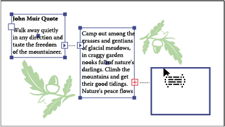

Threading text between objects
To thread (or continue) text from one object to the next, you link the objects. Linked type objects can be of any shape; however, the text must be entered in an area or along a path (not at a point).
Each area type object contains an in port and an out port, which enable you to link to other objects and create a linked copy of the type object. An empty port indicates that all the text is visible and that the object isn’t linked. An arrow in a port indicates that the object is linked to another object. A red plus sign in an out port indicates that the object contains additional text. This remaining unseen text is called overflow text.

You can break threads and have the text flow into either the first or the next object, or you can remove all threads and have the text stay in place.
 Thread text
Thread text
- Use the Selection tool to select an area type object.
- Click the in port or the out port of the selected type object. The pointer changes to the loaded text icon .
- Do one of the following:
-
To link to an existing object, position the pointer on the object’s path. The pointer changes to a . Click the path to link the objects.
-
To link to a new object, click or drag on an empty part of the artboard. Clicking creates an object of the same size and shape as the original; dragging lets you create a rectangular object of any size.
Another method for threading text between objects is to select an area type object, select the object (or objects) you want to thread to, and then choose Type > Threaded Text > Create.
-
Remove or break threads
- Select a linked type object.
- Do any of the following:
-
To break the thread between two objects, double-click the port on either end of the thread. The text flows into the first object.
-
To release an object from a text thread, choose Type > Threaded Text > Release Selection. The text flows into the next object.
-
To remove all threads, choose Type > Threaded Text > Remove Threading. The text stays in place.
-